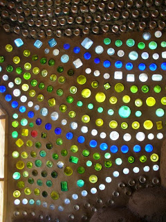
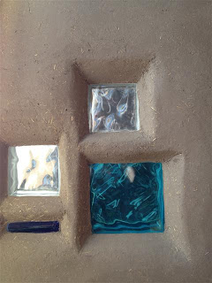
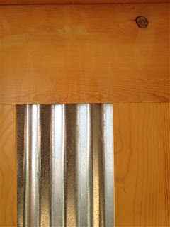
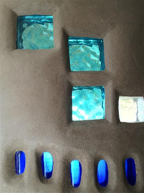
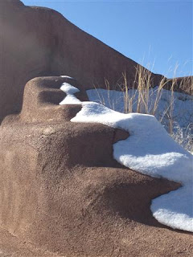

Since seeing my review of earthship design pros and cons, people have repeatedly asked me two questions that I would like to try and answer here:
1) What caused me to veer away from the standard earthship model?
Living in Taos, New Mexico, at the epicenter of the earthship phenomenon, I am awed by these structures every time someone new comes into town, because they inevitably want to visit them. I have many friends who have lived in them. I've visited them time and again. While I love and celebrate their successes (my favorite is the glass light walls), I also see... and listen to my friends bemoan... their flaws. Plus, I know that owners, who thought they were making sound investment in their future, had to sue for millions of dollars in damages because of the design's failure. Not to mention they had to live in really depressing, non-functional conditions while they were fighting to get their homes repaired. Well, and there's this whole list of other cons.
That's the WHY.

Amazing light wall
The second question people ask is:
2) What would I do to solve the design problem?
Because I love the look and do-it-yourself qualities of earthships, and I do believe that these projects work in some areas, I offer this advice... gleaned from modified designs that people have said work for them, and from studying and understanding vernacular architecture and bio-climatic design.
Location
- Build an earthship in a temperate or hot environment with regular rainfall of over 50 inches per year (that falls on the ground – places like Tucson have nearly 80 inches of rain per year, of which 11 hits the ground after evaporation) and humidity less than 60%. Cool environments and those with constant high humidity set earthships up for failure.
- Orientation is key, and the correct orientation will depend on location. As a general rule, face the windowwall of the house to the southwest if you need more heat (live in a place that is cold more often than hot), and to the southeast if you need to cool (live in a place hot more often than it is cold).
- Locate water tanks on the northwest if you live in a cold climate so they have a natural advantage to prevent freezing. Likewise, locate in the northeast if you live in a warm climate to prevent overheating.
- Build in a place with trees.
- If you live in a snowy windy winter place, don't build directly on a valley floor. Be slightly elevated above it, on the hills preferably, so you won't be in a cold sink in the winter and so you have access to breezes instead of winds in summer.
Siting
- Locate the entrance and walkways on the south if you live where there is snow and/or ice.
- Locate deciduous native fruit trees 3-8' outside the exterior wall of the home on the south and west sides of the structure so it is partially shaded in summer and takes on full heat in the winter. This will help prevent overheating in summer and will keep it uber warm in winter.
- Use partial shading (i.e. portales or lattice work) on western sides and roofs of porches if overheating is a problem during the summer.
- If you having blowing northern winds and snow/ice in the winter, plant 3-5 rows of evergreens in the north starting 10' away from the home to minimize heat loss due to wind.
- Use berms and swales to collect and direct water where you want it to go.
- Grow hybrid native, organic fruits and veggies all around the house. They'll use less water and produce better, and if installed correctly, will enhance natural breezes! Here's our secret list of plants that we know from our friends will work great in earthships!
- In HOT Arid climates: consider courtyard arrangement of multiple ships for different purposes: kitchens east, classrooms south for good north light, living on the north, and dining and baths on the west. This affords natural heat and cooling if the court is planted with deciduous trees. Use aquaponics in the courtyard to purify the water for grey-water appropriate purposes.
Design: Structure and Passive Solar
- If you like natural, skip the tires. Go for rammed earth, earthbags, stone, brick, or adobe instead.
- If you live in a place where humidity is above 60%, well, just don't build one. Don't hate me. It sucks, I know! But its true: you can get a MUCH better house building lightweight of vernacularly appropriate materials. A much better, easier to build, easier to heat and cool, more affordable home. Use a green roof even! But please don't build an earthship here.
- Use a timberframe construction so the structure is sound IF you live in a mild enough and non-humid climate to use strawbale or other low-thermal mass construction on your side elevations. THIS WILL ALSO MAKE YOUR HOME PERMIT-ABLE IN MOST CASES! yay!
- Don't use low thermal mass like strawbale if you want to effectively use passive solar design, UNLESS you live in a place where the temperature swing between summer and winter is less than 40 degrees between the day and night. (i.e. California)
- Use thermal mass properties of natural stone, adobe, cob, etc (earth-based, NEVER concrete exposed to the interior if you value breathing oxygen) if you live in a very hot or very cold climate.
- Please, NEVER build a butterfly shaped roof. Unless you like repairing them. ALOT. We recommend a single-pitch shed roof pitching to the north.
- DO NOT employ the German Passiv Haus design techniques on these homes! They WILL NOT WORK if sealed! You and your family will get sick! That's exactly why they introduced the cooling tubes in the newwest designs.
- Loft smart: capture naturally-rising heat and use any lofted space for warm libraries, tecked away bedrooms, and "hideaways". Provide ventilation and natural light.
Design: Room Placement
- Locate storage functions and pantries on the north side of the home where it will always be cool.
- Slope the roof to the north and bury that inground with a living green roof to shed cold northern winds. Plant a green roof with native species ONLY to minimize water use and loss.
- Bed "pods" instead of bedrooms can utilize creative cabinetry and can often dramatically reduce the size of the building footprint.
- Locate baths on the east or west, not the south, to avoid overheating. We prefer placing them on the east for early risers and on the west for nightowls.
- In cold climates, locate bedrooms along the south window wall so the room is naturally heated. Put the bed along this wall and you have instant bedwarming!
- Use multi-use spaces when you can to allow heat and cool to flow freely through the home.
Design: Windows and Doors
- Please, please do not build sloping window walls.
- Refrain from opening the greenhouse to the body of the house without a means of closing the space off (i.e. exterior-rated doors).
- Please do not build a greenhouse adjacent to the house if you are using ANY kind of bio-waste wall like strawbale.
- Don't use round windows or doors, or homemade ones, unless you are an EXPERT at repairing them.
- Use operable double-hung windows and smart venting strategy to get the most heat when you want it and the most fresh cool air when you want that.
- Please don't use windows on the south or west without 2' deep shade devices just above them. This is the perfect way to store small solarpanels!
- Only use bottle walls on the south and east, and west of the home if they are on the leeward (the direction the wind is going, not coming from) side. Don't use bottle walls on the north unless you live in Mexico or parts south where winter is pretty much "summer-lite." Basically, you only want bottle walls where the need for insulation is minimized.
Other Ideas
- Aquaponics for water purification and hydroponics for part of the greenhouse.
- Greywater harvesting connected to exterior aquaponics.
- Community-wide methane collecting and composting combination waste system.
- Individual composting toilets with vermiculture secondary composting.
- Use solatubes or “picture skylights” – long chimney looking projections with a north-facing window - to get light into north buried rooms.
- For solar hot water, build into the frame a box, with an operable window on the outside and a thermal wall on the inside. Put the solar water heater in here. This will keep cold air off the heater, and instill a naturally warmer heating capacity. Think: getting in your closed-up car on a really cold day after the sun’s been coming through the windows all day… its usually quite warm, yes? Exactly.
Lastly, do yourself a favor and get a good passive solar designer or architect be involved to make the earthship right for your region. Prepackaged kits will not work for all environments and need to be tweaked a bit to work right.
Have tricks that have worked for you? Please share them here and we'll update this!



